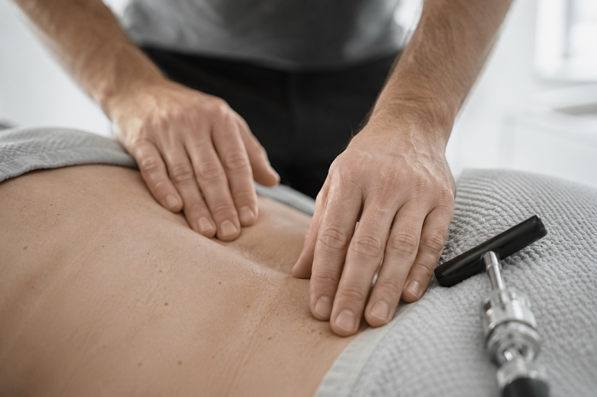
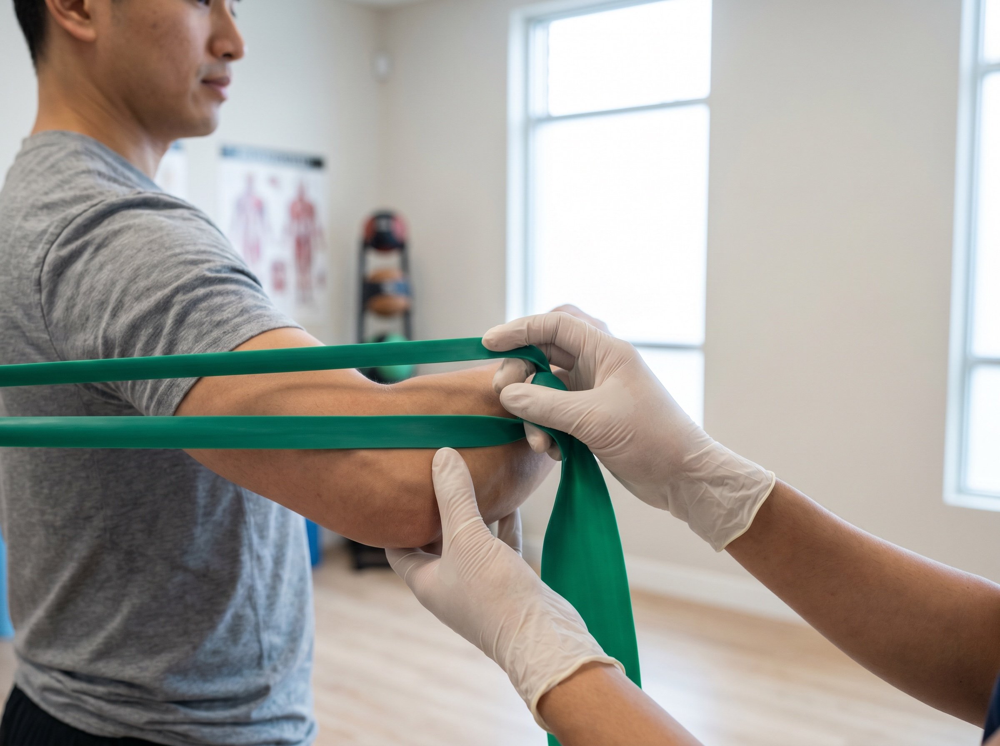

Chiro Adjustment
Specific, full-spine Gonstead adjustments that restore alignment and ease the irritation around the nerve — treating the root cause, not just the symptom.
See the methodRM50 off your first assessment. New patients only — valid all August.
Claim This OfferSit less, move more — a 2-minute stretch break every hour keeps your spine happier.
We treat the root cause of your pain, not just the symptom. Precise, methodical spinal care built around long-term recovery.
Aligned exists to find what is actually driving your pain, and to treat that — through the Gonstead Chiropractic system, segment by segment.
Our doctors take the time it takes. Nothing gets adjusted that the examination has not earned.
Too many people live with recurring pain, poor posture, stress and old injuries that quietly limit everyday life. You adapt around it until adapting stops working.
We treat a wide range of conditions. Drag through the deck — or just let it play.
Care tailored to your body, and to what the examination actually finds. From precise spinal adjustments to active rehab — and gentle care for the companions who move beside you.

Specific, full-spine Gonstead adjustments that restore alignment and ease the irritation around the nerve — treating the root cause, not just the symptom.
See the method
Targeted movement and strengthening that rebuilds what the pain took away, so the same problem does not return once you are back on your feet.
Start rehab
The same precise, gentle philosophy — now for your animals. Chiropractic care designed to keep pets moving comfortably through every life stage.
Explore Animal ChiroPrecision is not optional. Before a single adjustment is made, the Gonstead system checks your spine five separate ways.
Human connection first. You will know your doctor, and your doctor will know your spine.
Chiropractor · Gonstead System
Believes recovery is a partnership. Daniel built Aligned around patient education and the kind of careful, full-spine work that holds up over years, not weeks. Registered with the Gonstead Chiropractic Society (Australia) and the Association of Chiropractic Malaysia.
"Two years of lower back pain, gone in a structured plan. I finally understand my own spine."
"My sciatica used to dictate my week. Now I am back to weekend football with my kids."
"The x-ray analysis showed me exactly what was wrong. No guessing, just a clear plan."
A guided path that reduces uncertainty at every stage, so you always know what comes next.
We take a full history and understand how pain shapes your day.
Examination, pre-check and weight-bearing x-ray analysis.
A treatment plan built around your spine and your goals.
Specific adjustments and rehab to restore alignment and integrity.
Guidance and follow-up so relief holds for the long term.
Collaborations & experiences
The same precise, gentle philosophy, for the companions who move beside you. Chiropractic care designed for pets, now at Aligned.

Book a comprehensive assessment at Mid Valley and find out exactly what your spine needs.